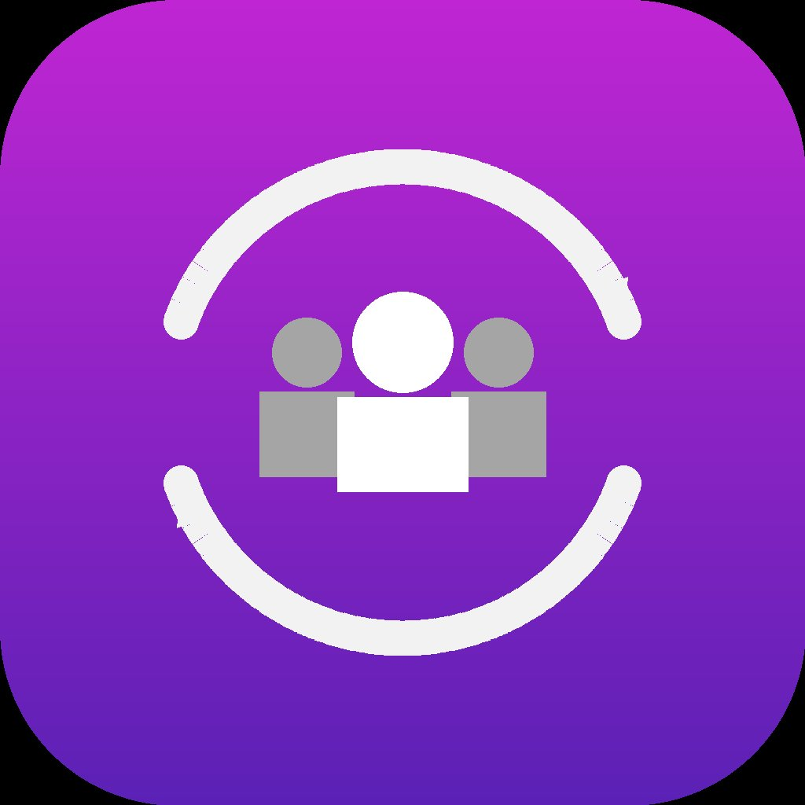

Enterprise Technology Strategy | ERP Platform Leadership | Product Delivery
Enterprise IT strategy, governance, and modernization.
Executive technology leadership across HR, ERP, cybersecurity, and AI from strategic planning through delivery and into stable operations.
Selected outcomes
Measured impact across transformation, operations, and delivery.
Current focus
Blending advisory leadership with hands-on AI product exploration.
Fractional CIO advisory
Executive IT operations guidance for organizations navigating cloud adoption, vendor management, cybersecurity, and service quality.

CircleSync product build
CircleSync is an AI-assisted product build taken from concept through development, delivery, and early stabilization. Visit www.getcirclesync.com
From AI prototype to stable product
Exploring how AI components can improve the next CircleSync release while assessing what products need after the first AI-assisted version ships.
Experience
A career built across enterprise HR, ERP, retail platforms, and advisory leadership.
2024 - Present
Fractional CIO
Taylor GeoSpatial | St. Louis, MO
Provide executive IT operations leadership across multi-site organizations while also building AI-enabled product ideas from concept through delivery and stabilization.
2013 - 2026
Information Systems Manager, Corporate & HR Systems
AmeriHealth Caritas | Philadelphia, PA
Led HR systems strategy and platform delivery for a 10,000-person managed care organization, including enterprise HR, Finance, vendor governance, and modernization planning.
2012 - 2013
Engineer, Retalix Tech Lead
Target Corporation | Minneapolis, MN
Directed development, testing, and on-site validation of Retalix POS systems for Target Canada's large-scale retail expansion across more than 100 stores.
2004 - 2012
Enterprise Application Developer, HR & ERP
Atterro Inc. / Siltek Corp / Hexaware Technologies
Delivered complex HR and ERP solutions for Fortune 500 clients across healthcare, financial services, and professional services.
Capabilities
Where strategy, platforms, and operating discipline meet.
ERP / HR Modernization
Legacy Platform Operations
Product Roadmaps
AMS / SI Partner Governance
Cybersecurity Oversight
Budget & Capacity Planning
Healthcare Compliance
AI Product Exploration
Product Stabilization
Credentials
Executive education and certified project leadership.
Executive MBA
Washington University in St. Louis, Olin Business School
Project Management Professional
PMP certified since February 2011. Certification valid through February 2029.
Bachelor of Engineering
Mumbai University, Mumbai, India
Contact